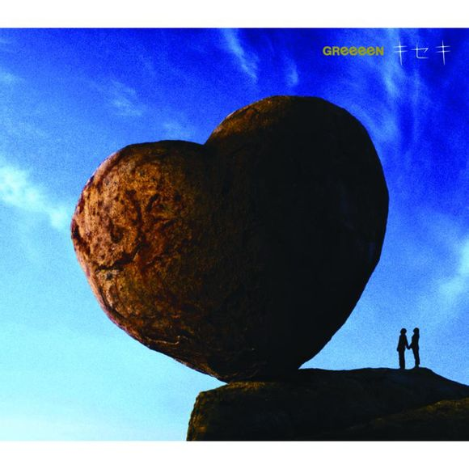
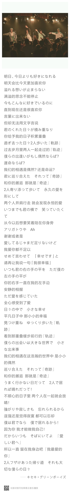

キセキ
歌曲背景
歌手 专辑
《キセキ》日本组合GReeeeN在2008年5月28日发行的第7张单曲，
同时也是春季日剧『ROOKIES』(菜鸟总动员)的主题曲。
这也是GReeeeN第一次跟剧合作。
改编自同名漫画的日剧『ROOKIES』由市原隼人主演
是一出很热血的运动型日剧,跟连续剧里面的主角们一样,
用很纯粹率直的想像唱的情歌。
《キセキ》饱含了2层含义：
不仅歌颂著在这广大的地球上跟所爱的人相遇的『奇迹』，
同时也有著两个人手牵手一起持续走下去的爱的『轨迹』的意思。
MV由代表着各种奇迹和轨迹的小故事组成，GReeeeN还是一样没有露面。
キセキ歌词：
